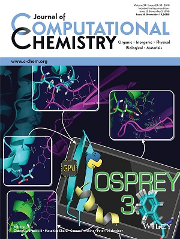
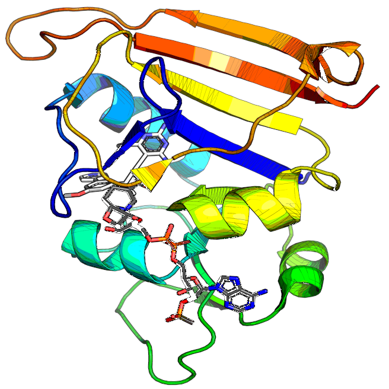

|
Siyu Wang, Ph.D.
Publications
- Holt, G. T., Gorman, J., Wang, S., Lowegard, A. U., Zhang, B., Liu, T., ... & Donald, B. R. (2023). Improved HIV-1 neutralization breadth and potency of V2-apex antibodies by in silico design. Cell Reportsi>, 42(7).
- Wang, S., Reeve, S. M., Holt, G. T., Ojewole, A. A., Frenkel, M. S., Gainza, P., Keshipeddy, S., Fowler, V. G., Wright, D. L., & Donald, B. R. (2022). Chiral evasion and stereospecific antifolate resistance in Staphylococcus aureus. PLOS Computational Biology, 18(2), e1009855. (Cover article.)
- Reeve, S. M., Si, D., Krucinska, J., Yan, Y., Viswanathan, K., Wang, S., Holt, G. T., ... , Donald, B. R. & Wright, D. L. (2019). Toward Broad Spectrum DHFR inhibitors Targeting Trimethoprim Resistant Enzymes Identified in Clinical Isolates of Methicillin-Resistant Staphylococcus aureus. ACS Infectious Diseases, 5(11), 1896-1906.
- Hallen, M. A., Martin, J. W., Ojewole, A., Jou, J. D., Lowegard, A. U., Frenkel, M. S., Gainza, P., Nisonoff, H. M., Mukund, A., Wang, S., Holt, G. T., Zhou, D., Dowd, E., & Donald, B. R. (2018). OSPREY 3.0: Open‐source protein redesign for you, with powerful new features. Journal of Computational Chemistry, 39(30), 2494-2507. (Cover article.)
- Wang, S., Xu, J., & Zeng, J. (2015). Inferential modeling of 3D chromatin structure. Nucleic Acids Research, 43(8), e54.
|
|


|
|